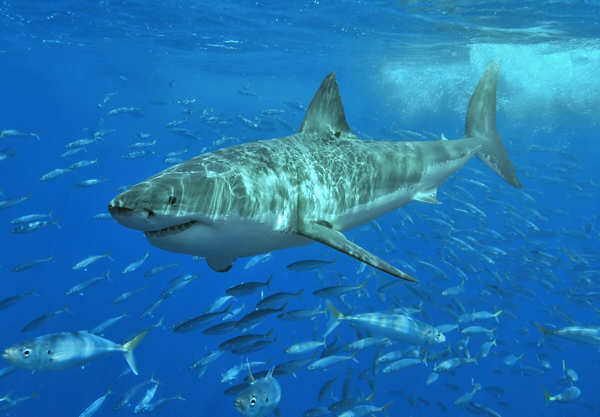

|  |
Habitat:Habita tanto águas temperadas como tropicais, mas ocorre com mais frequência em ambientes temperados. Podem ser encontrados desde a superfície a até cerca de 1.300 m de profundidade. |
Hábito de vida:Animais geralmente solitário ou em pares, mas pode ser encontrado em agregações de alimentação de 10 ou mais indivíduos, mas não formam cardumes . São capazes de percorrer grandes distâncias, até mesmo transoceânicas, como por exemplo entre a África do Sul e a Australásia. São predadores impressionantes que se alimentam de uma grande variedade de animais: peixes, focas, golfinhos, tartarugas, aves marinhas, carcaças, cefalópodes e outros animais fazem parte do seu cardápio. São famosos por serem capazes de saltar com o corpo todo para fora da água quando estão caçando, além de atingir velocidades impressionantes. |
Características gerais:São tubarões grandes com em média 4,6 metros de comprimento mas alcançando os 6 metros e possivelmente até mais. Se caracterizam pelo corpo em forma de torpedo, com a parte superior acinzentada e o ventre branco. Possuem a ponta das nadadeiras peitorais com manchas pretas. Essa espécie se tornou mundialmente conhecida e associada a ataques em 1975 devido ao filme Tubarão, dirigido por Steven Spielberg. Contudo o filme retrata de forma errada e fantasiosa o comportamento destes tubarões. Atualmente é comum que ela seja associado ao turismo de mergulho e à pesca esportiva devido à sua grande popularidade. Contudo, encontra-se como vulnerável pela IUCN devido a pesca incidental e pesca ilegal para comércio de carne e óleo de fígado. |
Distribuição Mundial:Cosmopolita, sendo mais comum em águas temperadas. |